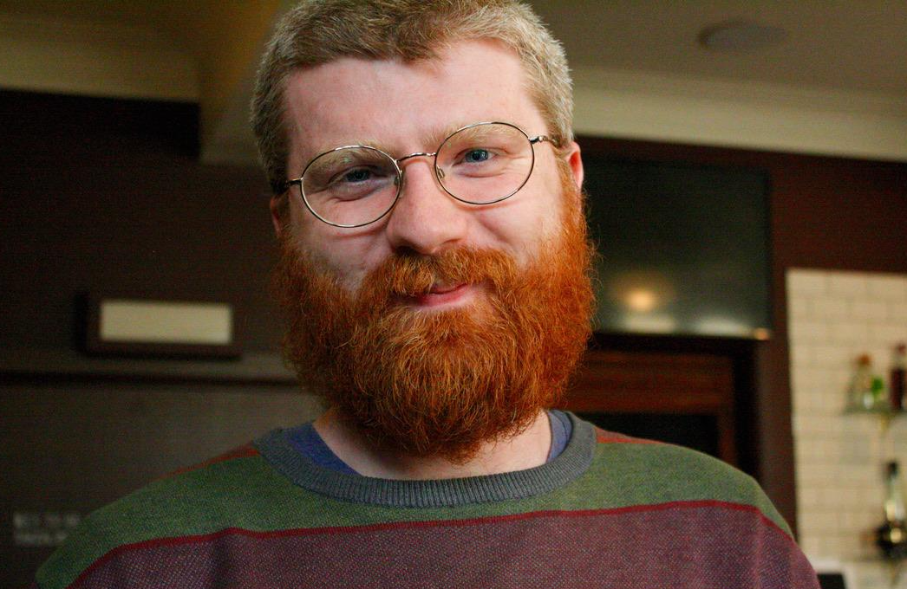

My joy as a Designer comes from designing for the user; using technical complexity
to present user experiences that feel intuitive and expressive.
My career began in the theatre, studying performance art and working as a Sound Designer
and Composer for live stage productions. Here my greatest enjoyment came from designing
procedural sound systems that could respond dynamically in real-time to performers and audiences.
I was able to explore the technical possibilities of these procedural systems in more depth during
the University of Edinburgh’s MSc in Sound Design. This course opened up my creative scope into the wider
world of creative engineering.
Since then, I have been working with various clients on various software stacks, most recently working as
an Audio Programmer for the games company Beast Burst Entertainment on their upcoming game Scars of Honor.